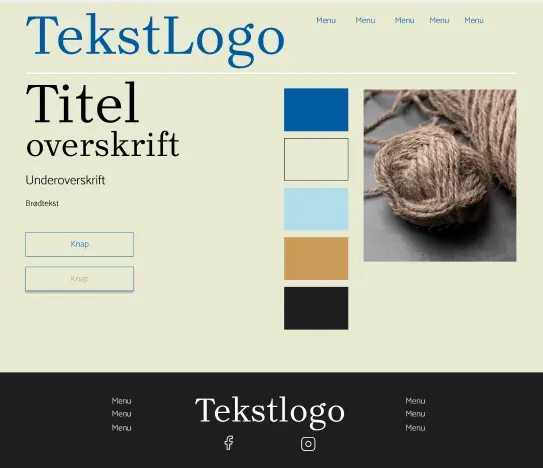

Portfolio
Grundlæggende UX/UI
I forløbet med UI og UX, var formålet at lærer om UX-metoder, samt hvordan vi skulle præsentere vores produkt og formidle vores research og testresultater.
Emnesite website
Dette blev til et kodet site, om et selvvalgt emne, som interesserede os. Her skulle vi bruge vores tværfaglige principper for planlægning, design og udvikling af den digitale brugergrænseflade. Den mere udfordrende opgave i dette var udvælgelse og tilpasning, og produktion af tekst og billeder til sitet.
Vi skulle selv udarbejde research og begynde at designe, hvor vi blandt andet lærte om desktop research, moodboards og styletiles.
Her brugte jeg desktop research som min primære research metode. Denne metode handler om at undersøge hvordan andre har formidlet emnet. Ud fra min research kunne jeg fik jeg inspiration til hvordan emnet førhen er blevet vist og formidlet. Jeg lavede også et moodboard, der skulle visualisere mine tanker og ideer, som bagefter blev til et styletile.
Vi skulle også begynde at bruge Figma, til at skabe vores egne prototyper af sitet inden vi skulle begynde at kode.

Jeg lærte blandt andet, at Figma er et utrolig effektivt designredskab til at se ens ideer komme til live, hvor man nemt kan finpudse projektet i design processen inden man begynder at kode.
EmnesiteProcesdokument til Emnesite
ProcesdokumentPræsentation til Emnesite
Powerpoint